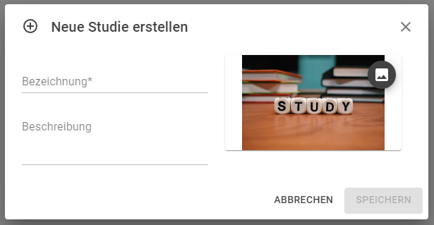
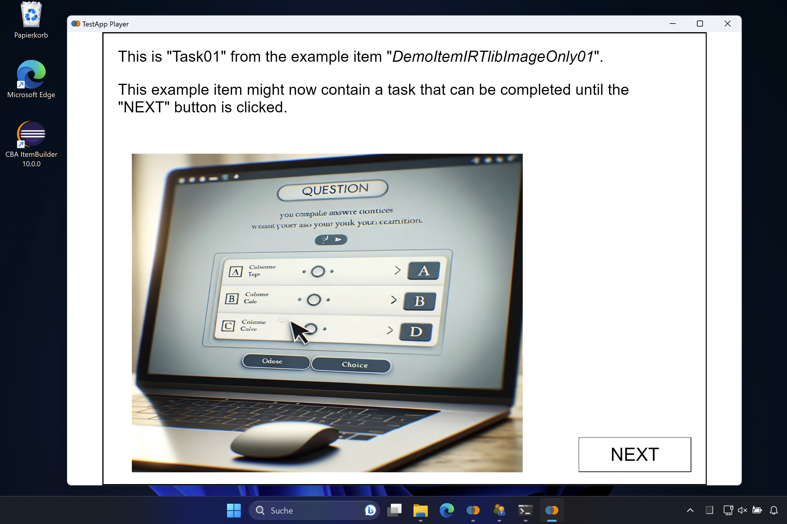
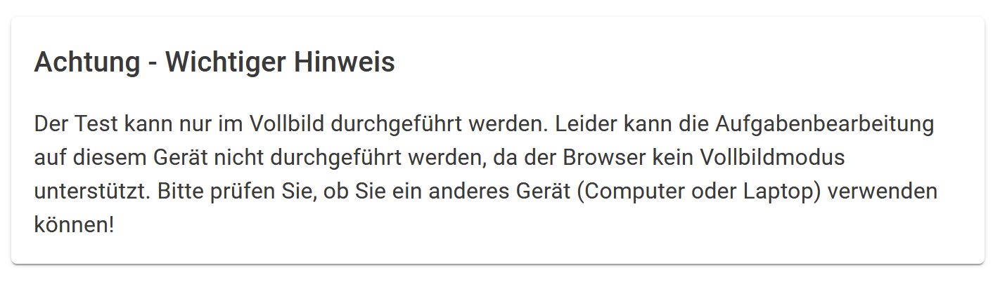
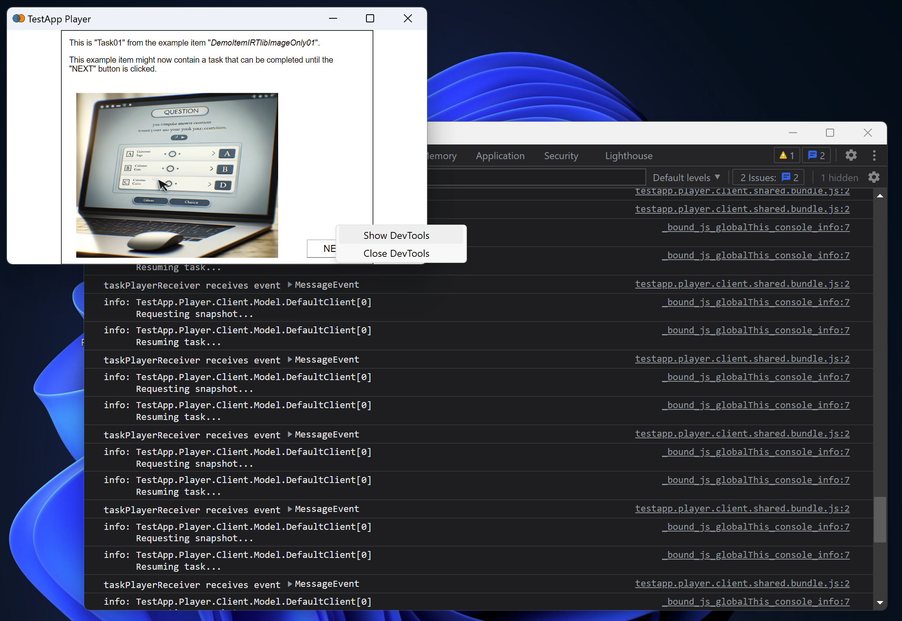
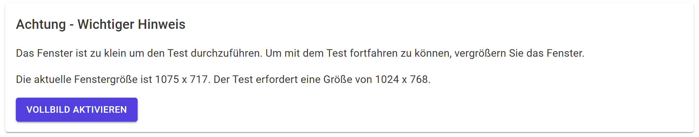

4 Vorbereitung Studien / Preparation Studies
Konfigurationen die mit dem IRTlib-Editor erstellt werden, werden in sogenannten Studien zusammengefasst. Eine Studie soll die Assessmentinhalte zusammenfassen, welche in einer Erhebung oder Sitzung administriert werden.
4.1 Studienverwaltung
Nach dem Start des IRTlib-Editors wird die Ansicht Studien angezeigt. In dieser Ansicht ist der erste Schritt zur Vorbereitung einer neuen Konfiguration das Hinzufügen einer neuen Studie:
Die erstellten Studien erscheinen als Karten in der Ansicht Studien. Beachten Sie, dass die Reihenfolge, in der die Studien in der Studienansicht angezeigt werden, keine Rolle spielt.
Eine detaillierte Anleitung zur Erstellung einer Studie findet sich hier in der eingebetteten Hilfe:
4.1.1 Studien Anlegen
Mit dem IRTLib Editor werden Konfigurationen für Studien erstellt, welche dann in einem IRTLib Player zur Durchführung computerbasierter Assessments verwendet werden können.
4.1.1.1 Wie geht’s los?
Um mit der Konfiguration einer Studie zu beginnen, klicken Sie auf das Plus-Icon unten rechts:

Danach geben Sie bitte in dem Dialog Neue Studie erstellen eine Bezeichnung und optional eine Beschreibung ein.
Achten Sie darauf, dass für die Bezeichnung nur Buchstaben (Groß und Kleinschreibung), Ziffer und ein _ erlaubt sind.

Klicken Sie anschließend auf Speichern.
Bei Bedarf können Sie über das folgende Icon einer Studie auch ein Bild zuordnen. Dieses Bild wird im IRTLib Editor für diese Studie verwendet:

4.1.1.2 Wie geht’s weiter?
Erstellten Studien werden in der Studienübersicht als Kacheln angezeigt:
Um nun mit der Erstellung und Konfiguration einer Studie fortzufahren, klicken Sie auf das kleine Bearbeiten-Icon:

4.1.2 Weitere Funktionen und Hinweise
- Studie Löschen: Mit dem Papierkorb-Icon können Sie Studien auch wieder löschen. Das Löschen von Studien kann nicht rückgängig gemacht werden:
- Sprache Wechseln: Über den Menüpunkt Einstellungen gelangen Sie zu dem Punkt Allgemeine Einstellungen, wo sie die Sprache des IRTLib Editors ändern können.
Über diesen Punkt erhalten Sie auch Zugriff auf die im IRTLib Editor verfügbaren CBA ItemBuilder Runtimes (Unterstützung für die Verwendung von CBA ItemBuilder-Inhalten, die mit unterschiedlichen Versionen des Programms erstellt wurden).
4.2 Grundlegende Konfigurationen
Die Konfigurationen einer bestimmten Studie, einschließlich Versionierung und Veröffentlichung, werden innerhalb von Studien verwaltet (d.h. nach dem Öffnen einer Studie zur Bearbeitung durch Klicken auf das Bearbeitungssymbol am unteren rechten Rand der Karte).
Erstellte Studien, die im IRTlib Editor in der Ansicht Studien angezeigt werden, können zur Bearbeitung geöffnet werden.

Detaillierte Informationen zu der Grundkonfiguration einer Studie finden sich hier in der eingebetteten Hilfe:
4.2.1 Einstellungen zur Studie
Bezeichnung: Wie soll die Studie benannt werden? Achten Sie darauf, dass für die Bezeichnung nur Buchstaben (Groß- und Kleinschreibung), Ziffer und ein
_erlaubt sind.Beschreibung: Um eine ausführliche Beschreibung der Studie hinterlegen zu können, ist dieses optionle Feld vorgesehen. Hier können auch Sonderzeichen und Umlaute usw. eingegeben werden.
Routing für Erhebungsteile aktivieren: Studien bestehen aus einem oder mehreren Erhebungsteilen. Die Erhebungsteile werden per Default als lineare Abfolge administriert. Wenn die Option Routing für Erhebungsteile aktivieren ausgewählt ist, kann die Reihenfolge der Erhebungsteile mit einem Blockly-basierten Routing definiert werden. Dadurch sind dynamische Abfolgen von Erhebungsteilen möglich, wobei auch Aufrufparameter der Studie bspw. für die Zuordnung von unterschiedlichen Reihenfolgen genutzt werden können.
Bildschirmgröße überprüfen: In Erhebungen, bei denen die Bildschirmgröße nicht bekannt ist, kann mit dieser Option ein Größenvergleich von Objekten (EC-Karte, Banknote, Personalausweis) mit Darstellungen auf dem Bildschirm vorgenommen werden.
Die Geräteprüfung erfolgt mit folgendem Dialog:

Wenn die Option Passende Bildschirmgröße erzwingen (im Abschnitt Anzeige) nicht aktiviert ist, dann kann die Testbearbeitung dennoch begonnen werden. Es wird, wenn die Auflösung zu klein ist, folgender Dialog angezeigt:

Hinweis: Diese Option ist zur Zeit nicht weiter konfigurierbar.
Wenn geänderte Einstellungen erhalten bleiben sollen müssen die Änderungen über das Disketten-Symbol gespeichert werden. Andernfalls kann das Verwerfen-Symbol verwendet werden:

4.3 Zugang zu Studien (Login)
Die IRTlib Software unterstützt verschiedene Wege, wie sich Personen (Testteilnehmer, Befragte, …) für ein Assessment Authentifizieren können. Die Konfiguratinen umfassen zwei Aspekte:
- Login-Modus: Wird ein Zugang benötigt (Login, Login+Passwort, Passphrases/Token) oder nicht? Und wenn Zugangsdaten benötigt werden, was sind gültige Werge?
- Loginquelle: Wie wird die Login-Information abgefragt (direkte Eingabe auf der Plattform, CBA ItemBuilder Item, ….) oder übergeben (Login-Parameter oder Aufruf-Parameter)?
Detaillierte Informationen zu der Konfiguration der Anmeldung einer Studie finden sich hier in der eingebetteten Hilfe:
4.3.1 Konfiguration der Anmeldung
Im Abschnitt Login kann konfiguriert werden, wie Testteilnehmer, die ein Assessment starten (entweder durch Aufruf eines Links in einem Browser der auf den Online-IRTlib-Player verweist oder durch Start des Offline-IRTlib-Players), identifiziert oder authentifiziert werden sollen.
Login-Modus: Die IRTlib-Software unterstützt verschiedene Login-Modi.
Zufälliger Inditifikator: Wenn eine Sitzung zum ersten Mal gestartet wird, wird in diesem Login-Modus ein Identifikator generiert. Diese zufällige, aber eindeutige Zeichenkette (eine sogenannte UUID, d.h. ein Universally Unique Identifier) wird als Personenidentifikator in allen Daten (d.h. Ergebnisdaten) und allen anderen gespeicherten Daten (z.B. Log-Daten/Trace-Daten, Snapshot-Daten, etc.) verwendet.
Benutzername: Wenn von den Testteilnehmern erwartet wird, dass sie sich durch eine eindeutige Zeichenfolge identifizieren (z.B. eine Zahl oder ein Text, der als Zugangskennung verwendet wird), kann eine Studie mit dem Login-Modus Benutzername konfiguriert werden. Der Zugang zum Assessment ist dann nur möglich, wennd die als Benutzername eingegebene Zeichenkette gültig ist. Die zugrundeliegende Idee ist, dass die Studienkonfiguration mit einer Liste gültiger Benutzernamen geladen wird und dass ein Testteilnehmer einen gültigen Benutzernamen eingeben muss, bevor er oder sie das Assessment starten kann. Nur authentifizierte Testteilnehmer können auf die als Studie definierten Assessmentinhalte zugreifen und die Aufgaben bzw. Fragen beantworten.
Benutzername und Passwort: Wenn in einer Studie nicht nur gültige Benutzernamen, sondern ein Passwort zur Authentifizierung der Testpersonen verwendet werden sollen, ermöglicht der Login-Modus Benutzername und Passwort eine Eingabe von Benutzernamen und Passwort. Analog zu Benutzername müssen dann beide Informationen in der Studienkonfiguration hinterlegt sein.
Zugriffstoken: Wenn in der Studienkonfiguration die gültigen Benutzernamen nicht gespeichert werden sollen, kann die Option Zugriffstoken verwendet werden. Jedes Token, das einem definierten Schema entspricht, wird dann akzeptiert und als Identifikator für die Testteilnehmer verwendet.
Speicher für Sessiondaten: Bei Onlineauslieferungen kann nach einer Unterbrechung ein Assessment forgesetzt werden. Diese Funktionalität wird bspw. auch benötigt, wenn im Browser die Seite neu geladen wird (bspw. durch Erzwingen eines Reload/F5, oder durch Schließen und erneutes Aufrufen der URL). Um sicherzustellen, dass Sitzungen, die von derselben Person (d.h. vom selben Browser) stammen, auch fortgesetzt werden können, kann die Software so konfiguriert werden, dass der Identifikator im Client gespeichert wird.
Gültige Werte: Die IRTlib-Software bietet für die Login-Modu Benutzername, Benutzername + Passwort und Zugriffstoken folgende Mechanismen zur Validierung von Anmeldeinformationen:
Liste: Eine Liste gültiger Berechtigungen (Benutzername oder Benutzername und Passwort, je nach Konfiguration des Login-Modus) kann als Teil der Studienkonfiguration definiert werden. Die Informationen können entweder im IRTlib-Editor bearbeitet oder aus einer CSV-Datei importiert werden. Definierte Werte können auch als CSV-Datei exportiert werden.
Code zur Prüfung: Es kann eine Blockly-Funktion angegeben werden, welche Wahr zurückmeldet, wenn die übergebenen Anmeldedaten gültig sind (sonst Falsch).
Gruppenlogin: Je nach Login-Modus dienen Benutzername oder Zugriffstoken als Personenidentifikator. Wenn die Option Gruppenanmeldung aktiviert wird, dann werden diese übergebenen Anmeldedaten zur Authentifizierung verwendet, um den Testteilnehmer als Mitglied einer Gruppe zu identifizieren (d. h. nur Testteilnehmer, die den Benutzernamen kennen, können sich als Teil der Gruppe authentifizieren). Innerhalb der Gruppe wird dann ein zusätzlicher Zufallsidentifikator generiert, um verschiedene Personen aus einer Gruppe zu unterscheiden.
Loginquelle: Die IRTlib-Software unterstützt verschiedenen möglichen Optionen, wie für Anmeldeinformationen bereitgestellt werden können.
Plattform: Ein Anmeldedialog wird vom IRTlib-Player (d.h. der Plattform) angezeigt. Die Überschrift zur Eingabe der Zugangsdaten, die Beschriftung der Eingabe für Benutzernamen und Passwort, die Beschriftung ddes Weiter-Buttons, dein Begrüßungs- und ein Instruktionstext sowie ein Fehlertextbei fehlgeschlagenen Login-Versuchen können konfiguriert werden.
Parameter: Gültige Anmeldedaten für Testteilnehmer können auch über die Befehlszeile (d.h. Parameter beim Aufruf der Offline-Version des IRTlib Players) oder über URL-Parameter (d.h. Parameter beim Aufruf der Studie über einen Link auf eine Online-Version des IRTlib Players) bereitgestellt werden. In diesem Fall wird kein Anmeldedialog oder Loginitem angezeigt.
Item: Alternativ zu einem Dialog des IRlLib-Players kann auch ein CBA ItemBuilder-Task konfiguriert werden, der als Login-Eingabemaske dient. Innerhalb des Items wird ein sogenannter ExternalPageFrame verwendet, um zur Validierung einer Eingabe einen bestimmten JavaScript-Befehl an den IRlLib-Player zu senden (ein Beispiel finden Sie hier).
Das Login Item muss als CBA ItemBuilder Projektdatei für die konfigurierte Laufzeitumgebung (Runtime) verfügbar sein und der Studienkonfiguration hinzugefügt werden. Um ein Login Item zur Studienkonfiguration hinzuzufügen, kann der integrierte Importdialog verwendet werden. Mehr Informationen zum Importieren von CBA ItemBuilder-Projekten findet sich in der Hilfe zum Abschnitt Items eines Erhebungsteils.
Zusätzliche Parameter: Neben der Authentifizierung von Testteilnehmern können die Anmeldeinformationen in der IRTlib-Software auch als zusätzlicher Parameter hinterlegt werden, die dann bspw. in der Ablaufsteuerung verwendet werden können.
Parameter für Dateinamen: Der
RawDataPath(d.h. der relative Pfad unter dem der Offline-IRTlib-Player die Ergebnisdaten speichert) und derMonitoringFile(d.h. der Name der Datei in welcher der Offline-IRTlib-Player Informationen fürs Studienmonitoring schreibt) können als Teil der Anmeldedaten konfiguriert werden.Blockly-Variablen: Zusätzliche Parameter können auch als sogenannte Preload-Variablen mit den Anmeldeinformationen hinterlegt werde.
| Login Modus | Speicher für Sessiondaten | Gruppenlogin | Gültige Werte | Loginquelle | Zusätzliche Parameter |
|---|---|---|---|---|---|
| Zufälliger Inditifikator | ja | nein | nein | keine | nein |
| Benutzername | ja | ja | Liste oder Code | Plattform, Item + Parameter | Werte oder Parameter |
| Benutzername und Passwort | ja | ja | Liste oder Code | Plattform, Item + Parameter | Werte oder Parameter |
| Zugriffstoken | ja | ja | Schema oder Code | Plattform, Item + Parameter | Parameter |
4.4 Anzeige von Assessment-Inhalten
Studien können festlegen, wie der CBA ItemBuilder-Inhalt dargestellt werden soll. Die Einstellungen im Aschnitt Anzeige können sich auf die Skalierung und die Ausrichtung der Inhalte sowie auf das Verhalten der IRTlib Player-Anwendung beziehen.
Detaillierte Informationen zu der Konfiguration der Anzeige einer Studie finden sich hier in der eingebetteten Hilfe:
4.4.1 Anzeigeeinstellungen
Für die Konfiguration der Anzeige stehen ausgewählte Optionen zur Verfügung, die sich auf die Darstellung der Assessmentinhalte und die Verwendung von CBA ItemBuilder-Inhalten beziehen, welche mit einem festgelegten Seitenverhältnis (Breite und Höhe) erstellt werden.
4.4.1.1 Fenstermodus
In der Auswahl Fenstermodus kann konfiguriert werden, ob ein zusätzliches Fenster im IRTlib Player angezeigt wird. Die Konfiguration wird je nach Umgebung unterschiedlich umgesetzt:
- Window: In diesem Fenstermodus wird im Offline-IRTlib Player ein reguläres Programmfenster verwendet, im Online-IRTlib Player wird der Assessmentinhalt im normalen Browserbereich angezeigt, und die Adressleiste und die Navigationsschaltflächen des Browsers sind in diesem Modus sichtbar.

- Vollbild: Der Offline-IRTlib Player startet direkt im Vollbildmodus, wenn diese Option konfiguriert ist. Damit verbunden ist auch ein Kiosk-Modus, d.h. der Zugriff auf andere Programme und das (versehentliche) Beenden des Programms ist nur über den Task Manager möglich. Soll die Möglichkeit zum Beenden der Testung bspw. für einen Testleiter möglich sein, muss ein Testleitermenü konfiguriert sein.
Der Online-IRlLib Player kann Assessmentinhalte auch im Vollbildmodus an, wenn diese Option gewählt ist. Wird der Vollbildmodus im Browser verlassen, wird dann der Assessmentinhalt ausgeblendet. Da automatisiert nicht in einem Browser in den Vollbildmodus gewechselt werden kann, sieht die Zielperson zunächst folgende Nachricht der Plattform:

Durch klick auf den Button Vollbild Aktivieren wird der Vollbildmodus gestartet und der Assessmentinhalt dann ohne Fensterrahmen und Navigationsflächen des Browsers dargestellt. Für kurze Zeit wird dann von den Browser typischerweise ein Hinweis eingeblendet dass mit
Escder Vollbildmodus wieder beendet werden kann.

Beachten Sie, dass diese Funktion nur in Browsern zur Verfügung steht, die den Vollbildmodus unterstützen (insbesondere auf älteren mobilen Geräten wird der Vollbildmodus nicht vollständig unterstützt; siehe für Details z.B. auf caniuse.com).
- Vollbild, wenn unterstützt: In diesem Modus wird das Assessment im Online-IRTlib Player nur dann im im Vollbildmodus angezeigt, wenn der Browser den Vollbildmodus unterstützt. Der Inhalt des computerbasierten Assessments wird jedoch im Fenstermodus angezeigt, wenn eine Studie online bereitgestellt wird und ein Browser verwendet wird, der den Vollbildmodus nicht unterstützt. Für den IRlLib Player offline ist diese Konfiguration identisch mit Vollbild.

- Debug: Dieser Modus ermöglicht während der Testausführung den Zugriff auf die Entwicklerwerkzeuge des Browsers, die für die Fehlersuche von Softwareentwicklern vorgesehen sind.
Wennd der Offline-IRTlib Player mit einer Studie gestartet wird, welche als Festermodus den Eintrag Debug konfiguriert hat, dann lassen sich über die rechte Maustaste während der Aufgabenpräsentation die sogenannten Entwickertools (DevTools) abrufen.

4.4.2 Skalierung und Ausrichtung
Assessmentinhalte, die mit dem CBA ItemBuilder erstellt werden, werden für eine konkrete Größe in Pixeln (Breite mal Höhe) erstellt. Für die Darstellung auf Geräten mit unterschiedlichen Bildschirmgröße und Bildschirmauflösungen können die Inhalte dann skaliert werden. Im CBA ItemBuilder stehen deshalb in der Preview die Optione unter Scaling Options zur Verfügung:

Im IRTlib Editor können analoge Einstellung vorgenommen werden.
Skalierung: Einstellung wie Inhalte angepasst werden sollen, wenn verfügbarer Platz und Größe der Items abweichen (Scaling Mode).
- keine: Die Inhalte werden ohne Anpassung an die verfügbare Fenster- bzw. Bildschirmgröße angezeigt (entspricht
None). - hochskalieren: Inhalte werden vergrößert, damit der verfügbare Platz ausgenutzt wird (entspricht
Up). - runterskalieren: Inhalte werden verkleinert, damit sie auf den Bildschirm/ins Fenster passen (entspricht
Down). - Fenstergröße: Inhalte werden vergrößert und verkleinert (entspricht
Both).
- keine: Die Inhalte werden ohne Anpassung an die verfügbare Fenster- bzw. Bildschirmgröße angezeigt (entspricht
Horizontale Ausrichtung: Die Optionen zentriert / links / rechts werden genutzt um Iteminhalte horizontal auszurichten, wenn die Breite von Fenster oder Bildschirm größer ist als die Breite des Inhalts.
Vertikale Ausrichtung: Die Optionen zentriert / oben / unten werden genutzt um Iteminhalte vertikal auszurichten, wenn die Höhe von Fenster oder Bildschirm größer ist als die Höhe des Inhalts.
4.4.2.1 Weitere Einstellungen
- Passende Bildschirmgröße erzwingen: Wenn bei Skalierung nicht runterskalieren oder Fenstergröße ausgewählt ist, kann über diese Option erzwungen werden, dass man nur dann mit der Aufgabenbearbeitung starten kann, wenn die verfügbare Größe des Fensters bzw. Bildschirms größer ist als die benötigte Breite/Höhe der Items. Andernfalls wird folgende Nachricht angezeigt:

Hinweis: Die Einstellungen zur Anzeige beziehen sich auf alle Erhebungsteile innerhalb einer Studie. Werden in einem IRTlib-Player mehrere Studien konfiguriert, müssen die Einstellungen zueinander passen, d.h. es ist nicht mögliche mit einer Instanz eines IRTlib-Players gleichzeitig eine Studie im Fenstermodus: Fenster oder im Fenstermodus: Vollbild zu adminsitrieren.
Wenn geänderte Einstellungen erhalten bleiben sollen müssen die Änderungen über das Disketten-Symbol gespeichert werden. Andernfalls kann das Verwerfen-Symbol verwendet werden:

4.5 Menü für Testadministratoren
Wenn die Durchführung von Assessments begleitet durch Testleiter oder Interviewer erfolgt, können Funktionen passwortgeschützt für Testleiter definiert werden.
Auch wenn Sie die Funktionalität eines Testadministratormenüs für die Durchführung Ihrer Datenerfassung nicht benötigen, sollten Sie dennoch ein Testadministratormenü definieren, wenn Sie planen, mit dem IRTlib Player Daten offline zu erfassen. Nur so können Sie sicherstellen, dass Sie die Anwendung im Falle unvorhergesehener Ereignisse ohne den Task-Manager (und ohne möglichen Datenverlust) beenden können.
Detaillierte Informationen zu der Konfiguration des Testleitermenüs finden sich hier in der eingebetteten Hilfe:
4.5.1 Konzept eines Testleitermenüs (Menü für Testadministratoren)
Die Konfiguration des Menü für Testadministratoren erfolgt in zwei Schritten. Zunächst muss eine Tastenkombination definiert werden, mit der das Testmanager-Menü aufgerufen werden kann. Wird diese Tastenkombination während der Testbearbeitung gedrückt, erscheint ein Fenster zur Passworteingabe. Testadministratoren geben das (nur) ihnen bekannte Passwort ein und erhalten so Zugriff auf ausgewählte Funktionen. Zu diesem Zweck müssen in einem zweiten Schritt eine oder mehrere Rollen im IRTlib Editor definiert werden.
4.5.1.1 Zugriff für Testleitung
Zunächst muss eine Tastenkombination definiert werden.
Taste: Die Konfiguration der Tastenkombination für das Testleitermenü erfordert zunächst die Definition einer Taste. Um eine Taste festzulegen klickt man in das Feld und drückt die Taste, welche für das Testleitermenü verwendet werden soll.
Modifikatoren (Alt, Strg und Shift): Für eine Taste kann dann zusätzlich festgelegt werden, ob eine oder mehrere Modifkatoren gedrück werden müssen damit das Testleitermenü geöffnet wird.
Beispiel:
- Die folgende Konfiguration definiert die Tastenkombination
Strg+Shift+X:

Die definierte Tastenkombination öffnet nur die Option zur Eingabe eines Passowrt für Testleiter während der Testbearbeitung im IRTlib Player. Um die Funktion zu nutzen ist ein Passwot notwendig, welches zusammen mit einer Rolle im zweiten Schritt definiert wird.
4.5.1.2 Rollen
Nach dem Aufruf der definierten Tastenkombination wird während der Testbearbeitung die Aufforderung zur Eingabe eines Passworts angezeigt:

Welche Funktionen nun wirklich zugreifbar sind wird dadurch gesteuert, welches Passwort eingegeben wird. Nur wenn ein gültige Passwort bekannt ist, können Funktionen der Testleitung aufgerufen werden.
Beispiel:
- In der folgenden Konfiguration können Testleiter mit diesem Passwort zur nächaten Aufgaben springen (Weiter) oder die Anwendung beenden (Sitzung beenden):

Um eine Rolle zu definieren, muss zunächst das
+-Symbol unten rechts geklickt werden. Danach kann der Name einer Rolle und ein Passwort definiert:

Der Name der Rolle dient nur der Dokumentation. Entscheidend für die Funktionalität ist die Vergabe eines eindeutigen Passwortes und die Auswahl einer oder mehrerer der folgenden Funktionen:
- Aufgabe zurück: Ermöglicht die Navigation zur vorherigen Aufgabe.
- Aufgabe vor: Ermöglicht die Navigation zur nächsten Aufgabe an.
- Itemliste abbrechen: Ermöglicht die Abarbeitung der aktuellen Itemliste abzubrechen. Diese Option ist insbesondere sinnvoll, wenn in einem Erhebungsteil die Option Routing aktiviert ist und die Definition von CBA ItemBuilder Tasks mit Hilfe von Itemlisten umgesetzt ist.
- Erhebungsteil abbrechen: Ermöglicht den Abbruch des aktuellen Erhebungsteils.
- Sitzung beenden: Ermöglicht das Beenden der aktuellen Sitzung.
- Lautstärkeregelung: Ermöglicht die Änderung der Lautstärke.
Die Audiodatei, welche zur Kontrolle der Audioausgabe abgespielt wird nachdem die Lautstärke verändert wurde, kann im Abschnitt Audio für Soundtest eingefügt und in der Studienkonfiguration hinterlegt werden.
Wenn geänderte Einstellungen erhalten bleiben sollen müssen die Änderungen über das Disketten-Symbol gespeichert werden. Andernfalls kann das Verwerfen-Symbol verwendet werden:

4.6 Abschluss von Erhebungen
Für die Integration von Assessments in externe Abläufe besteht die Möglichkeit zu konfiguriere, wie nach der Bearbeitung der Assessmentinhalte in einer Session vorgegangen werden soll, was also am Session-Ende geschehen wird.
4.6.1 Session und Session-Ende
Eine Session bezieht sich auf die Durchführung einer Erhebung mit einer Person zu einem bestimmten Zeitpunkt. Der in einer Session angezeigte Inhalt entspricht einer konfigurierten Studie, wie sie im IRTlib Editor erstellt werden kann. Nachdem alle in einer Studie definierten Erhebungsteile durchgeführt worden sind, wird das Session-Ende erreicht.
4.6.1.1 Konfiguration des Session-Endes
Was nach einem Session-Ende erfolgt, d.h. wie sich der IRTlib Players am Ende einer Sitzung verhält, kann mit den folgenden Optionen festgelegt werden:
Neue Session starten: Es wird eine neue Sitzung gestartet. Deses Verhalten ist nicht sinnvoll, wenn die Anmeldedaten übergeben werde (entweder als Startup-Parameter oder als URL-Parameter).
Endtext anzeigen: Wenn diese Option ausgewählt ist, zeigt die Plattform den konfigurierten Text an. Der Text kann als Nachricht auf Endseite konfiguirert werden.
End-Item anzeigen: Analog zu einem Login-Item kann auch ein CBA ItemBuilder-Item definiert werden, das am Ende einer Sitzung angezeigt wird.
Das End-Item kann schließlich das Beenden des Offline-IRTlib Players anstoßen. Ein Beispiel für ein End-Item mit dem notwendigen JavaScript-Aufruf findet sich hier.
- Redirect to Exit URL (Redirct zu Exit-Url): Bei Online-Lieferungen mit dem IRTlib Player ist es möglich, auf eine URL umzuleiten. Die Weiterleitungs-URL kann dann konfiguriert werden.
4.6.1.2 Weitere Optionen
- Session ID kann wiederverwendet werden: Wenn diese Option aktiviert ist, können mehrere Datenerfassungen mit einer Session-ID administriert werden.
Wenn geänderte Einstellungen erhalten bleiben sollen müssen die Änderungen über das Disketten-Symbol gespeichert werden. Andernfalls kann das Verwerfen-Symbol verwendet werden: